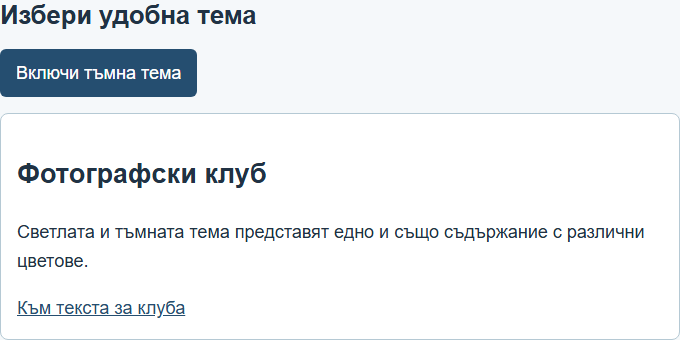
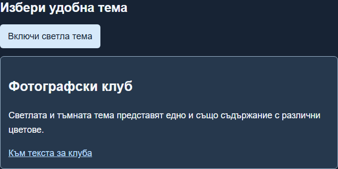

За какво е този урок?
Ще управлявате обща цветова тема чрез един CSS клас и ще проверите текста, картите, връзките и бутона в двете състояния. Поредицата свързва HTML структура, CSS оформление и JavaScript поведение.
Четете обясненията, изпробвайте действията и запазвайте работата си. Отворените въпроси показват примерен отговор след предаване. При собствена тема са възможни различни обосновани решения.
Събитие, състояние и видим резултат
Как работи задачата
JavaScript може да променя видимостта чрез hidden. В тази задача съдържанието остава видимо, а променяте неговото оформление. Добавянето на клас dark към body включва група CSS правила за тъмната тема.
classListпредставлява списъка с класове на елемента.toggle("dark")добавя класа, ако липсва, или го премахва, ако присъства.- Върнатата стойност показва дали класът присъства след операцията.
body.dark .cardизбира картата, когато body има клас dark.
JavaScript управлява състоянието, а CSS задава външния вид. Промяната само на фона не е достатъчна: проверявайте и текста, връзките и бутоните. Състоянието на превключвателя се предава и чрез aria-pressed.
Този урок е част от поредицата „Интерактивна уеб страница с JavaScript“: показване на подробности → смяна на тема → изчисления → проверка на форма → филтриране на списък. Общата ситуация е страница за училищни клубове: посетителят разглежда подробности, избира тема, изчислява учебна такса, проверява данни за участие и намира клуб. Всяка задача има собствен работещ пример и може да се изпълни самостоятелно. Общият подход е: избираме елементи, обработваме събитие, проверяваме състоянието и обновяваме видимия резултат.
Едно състояние — няколко CSS правила
document.body е елементът body. classList.toggle("dark") променя само класа dark и запазва останалите класове. Връща true, ако dark вече присъства, и false, ако е премахнат. Променливата darkIsActive пази този резултат за текущото натискане.
При тъмна тема aria-pressed е "true", а надписът „Включи светла тема“ описва следващото действие. CSS селекторът body.dark .card означава карта, вложена в body с клас dark; body .dark би означавал друг избор.
Добавянето на втора карта преди зареждането не изисква втори обработчик: същите CSS правила важат за всички карти. Темата тук не се пази в хранилище — след презареждане започваме от светлия HTML вариант.


Работещ пример и подготовка
Работещ пример
Отворете работещия пример или изтеглете HTML файла.
Подгответе работния файл
- Изтеглете пълния работещ HTML пример. Запазете го като
24-javascript.htmlв своя папка. - Отворете един и същ файл в текстов редактор и в браузър. Записвайте с UTF-8 и разширение .html; след промяна запазвайте и презареждайте.
- В готовия файл CSS е между style таговете в head, HTML съдържанието е в body, а JavaScript е след елементите, преди затварящия body. Така те вече съществуват, когато ги избираме.
- За работа в CodePen отворете нов Pen и поставете отделните откъси от урока в HTML, CSS и JS. В JS не поставяйте script тагове. При предаване запазете резултата като пълен самостоятелен HTML файл; най-прекият начин е да пренесете промените в изтегления пример.
Ако действието не работи, отворете инструментите за разработчици с F12 или менюто на браузъра и изберете Console. Започнете от първата грешка: проверете точните id, имената на променливите, кавичките, скобите и мястото на script. След поправка запазете, презаредете и повторете действието. Неправилен id може да даде null, а повторно обявено const със същото име — грешка.
HTML елементи и CSS оформление
HTML — елементите
<h1>Избери удобна тема</h1>
<button id="theme-button" type="button" aria-pressed="false">Включи тъмна тема</button>
<article class="card" id="reading">
<h2>Фотографски клуб</h2>
<p>Светлата и тъмната тема представят едно и също съдържание с различни цветове.</p>
<a href="#reading">Към текста за клуба</a>
</article>CSS — оформлението
* { box-sizing: border-box; }
body { margin: 0; padding: 20px; font: 18px/1.6 Arial, sans-serif; color: #203244; background: #f5f8fa; }
.demo { max-width: 680px; margin: auto; }
h1 { font-size: 1.6rem; line-height: 1.25; }
button { font: inherit; padding: .6rem 1rem; color: white; background: #254e70; border: 0; border-radius: 6px; cursor: pointer; }
button:focus-visible, input:focus-visible { outline: 3px solid #a06000; outline-offset: 3px; }
input { display: block; width: 100%; max-width: 24rem; font: inherit; padding: .4rem; margin: .2rem 0 1rem; }
.card { background: white; border: 1px solid #b5c9d4; border-radius: 8px; padding: 1rem; margin: 1rem 0; }
[hidden] { display: none !important; }
a { color: #254e70; }
body.dark { background: #172334; color: #f2f6fb; }
body.dark .card { background: #26384d; border-color: #9fb7cc; }
body.dark a { color: #b8dcff; }
body.dark button { background: #d6e9fa; color: #172334; }Проследете JavaScript кода
JavaScript — поведението
const themeButton = document.querySelector("#theme-button");
function switchTheme() {
const darkIsActive = document.body.classList.toggle("dark");
themeButton.setAttribute("aria-pressed", String(darkIsActive));
if (darkIsActive) {
themeButton.textContent = "Включи светла тема";
} else {
themeButton.textContent = "Включи тъмна тема";
}
}
themeButton.addEventListener("click", switchTheme);Самостоятелна работа и проверки
Самостоятелна работа
- Използвайте работния HTML файл или пресъздайте примера в CodePen. Натиснете бутона няколко пъти.
- Заменете текста на картата със съдържание от вашия проект.
- Подберете свои съгласувани цветове за двете теми. Проверете контраста на текста, връзките и бутона.
- Добавете втори блок с class="card". Уверете се, че и той се оформя от правилата.
- Проверете бутона с клавиатура и след презареждане. В този пример темата не се запазва между зарежданията.
Резултат: ваш работещ вариант и кратка бележка какво сте променили и проверили.
Проверете резултата
| Проверка | Очакван резултат |
|---|---|
| Начален изглед | Светъл фон и надпис „Включи тъмна тема“. |
| Първо натискане | Тъмен фон, светъл текст и надпис „Включи светла тема“. |
| Второ натискане | Светлата тема се възстановява. |
| Връзки и карти | Четими са и в двете теми. |
| Презареждане | Примерът започва отново със светлата тема. |
Прочетете още
MDN — classList. За избор на цветове използвайте и урок 9.
Оформете две карти в две теми
- Запазете пълния пример като
24-javascript.html. Проверете началния светъл изглед и две последователни натискания. - Заменете текста с представяне на ваш клуб и добавете втора article с class="card" и различно id. Един и същ бутон трябва да сменя оформлението и на двете.
- Изберете свои цветове за body, .card, a и button в светлата тема и за съответните body.dark правила. Не променяйте името dark в JS, освен ако го промените и в CSS.
- Измерете контраста на текста върху фона, връзките върху картата и надписа върху бутона във всяка тема — шест двойки. За обикновен текст търсете поне 4.5:1. Може да използвате WebAIM Contrast Checker. След промяна на цвят измерете отново.
- Добавете в края видима бележка с шестте двойки HEX кодове и измерените съотношения. Проверете чрез Tab и Enter/Space; фокусът трябва да се вижда в двете теми.
- Презаредете при активна тъмна тема: примерът трябва да започне от светла. Запазете файла с двете карти, кода и бележката.
Самопроверка
Какво връща toggle?
Първото добавя класа и връща true; второто го премахва и връща false. Останалите класове се запазват. Върнатата стойност описва състоянието след операцията.
Един бутон, две карти
Бутонът сменя класа на body. CSS селекторите .card и body.dark .card оформят всички съответстващи карти. Не е необходимо JavaScript да променя всяка карта поотделно.
Защо темата се връща?
Не: примерът не записва избора в хранилище. При ново зареждане body отново е без dark. Проверете, че aria-pressed е false и надписът предлага включване на тъмна тема.
Какво да запомним?
- ClassList работи с класовете на елемента.
- Toggle добавя липсващия клас или премахва наличния.
- JavaScript управлява състоянието, CSS — цветовете.
- Aria-pressed описва активното състояние на превключвателя.
- Проверяваме контраста и двете теми след презареждане.